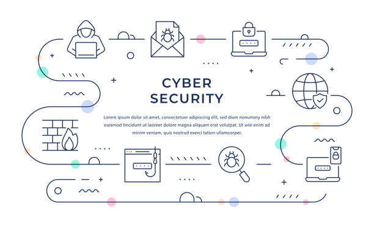

Fondations IT
Apprentissage des bases en réseaux, systèmes et programmation. Compréhension des protocoles TCP/IP, gestion des systèmes Linux/Windows et introduction au cloud.
Je suis en formation pour devenir Analyste en Cybersécurité. Ce site présente mon choix de parcours, mes objectifs et les compétences que je développe.
La cybersécurité est devenue un enjeu majeur dans le monde numérique. Les entreprises, les gouvernements et les particuliers doivent protéger leurs données contre les menaces croissantes telles que les attaques informatiques, le piratage et les ransomwares.
J’ai choisi ce parcours car il allie analyse, protection et innovation. Mon objectif est de contribuer à la sécurité des systèmes d’information et à la confiance numérique.
Apprentissage des bases en réseaux, systèmes et programmation. Compréhension des protocoles TCP/IP, gestion des systèmes Linux/Windows et introduction au cloud.
Étude des menaces, cryptographie, sécurité des applications et gestion des incidents. Mise en pratique avec des laboratoires de simulation d’attaques et défenses.
Automatisation, CI/CD, déploiement sécurisé sur le cloud (Azure, AWS). Intégration de la sécurité dans les pipelines DevOps.
Me spécialiser en analyse des menaces et en sécurité des infrastructures cloud, afin de devenir un expert reconnu dans le domaine.
N’hésitez pas à m’envoyer un message via ce formulaire :